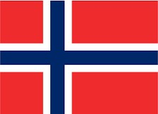

挪威 (Norway)介紹

首都 Capital
奧斯陸。
語言 Language
挪威語。
時差 jet lag
秋冬較台灣慢7小時；自3月底至10月底春夏季為日光節約時間，則慢6小時。
貨幣 Currency
挪威克朗（NOK）。
電壓 Voltage
為220伏特，插座及插頭均為圓形雙頭雙孔。
歷史 History
挪威於西元九世紀前是一個分裂的地方，直至西元十一世紀才統一建國；西元1397年丹麥、瑞典與挪威組成卡瑪聯盟，終止於西元1521年，其後挪威一直受丹麥管理；西元1814年丹麥將挪威割讓與瑞典；西元1905年瑞典和平交出挪威政權，挪威公投實行君主制度；西元1940年遭德或佔領，至西元1945年德國戰敗，挪威國王始得還都。
國土特性 Territorial characteristics
境內高原及山地佔全國面積70%以上；國土南部有湖泊沼澤廣佈，西部海岸則多冰河形成的峽灣，松恩、蓋倫格是挪威著名的峽灣景觀，沿海的大陸棚寬闊，甚至比本土面積大上兩倍之多；有些國土被歐洲最大的冰川覆蓋，是除了冰島以外，歐洲最大的冰原。
氣候 Climate
年降水量山地西坡約2000-4000毫米，內陸500-1000毫米，河流水量充足，水力資源居歐洲首位。北部北極圈內的 部分地區夏季會出現白晝，冬季則為永夜。
文化 Culture
5月17日為挪威的憲法日，也就是國慶節。這一天，挪威絕大多數的商店都會休假，人們全都以極大的熱情參與到慶祝活動里。這時，即使是在奧斯陸、卑爾根等大城市的人們，也會打扮得非常傳統。挪威民族服裝的顏色和款式因地域而不同，大概有幾百種之多，他們都將穿上最能代表本地區的服飾，因此遊行隊伍也會是一場盛大的挪威民族服裝展示活動。